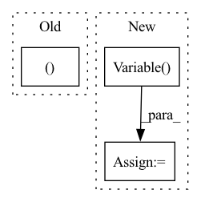

Pattern ID :4498
Before Change
if trainin_is_tf_placeholder:
bn_training = tf.compat.v1.placeholder_with_default(False, shape=[], name="bn_is_training_placehoder")
for pair in bn_conv_linear_pairs:
_, batchnorm, _ = pair
beta = BNUtils.get_beta_as_numpy_data(sess, batchnorm.op).reshape(-1)
gamma = BNUtils.get_gamma_as_numpy_data(sess, batchnorm.op).reshape(-1)
mean = BNUtils.get_moving_mean_as_numpy_data(sess, batchnorm.op).reshape(-1)After Change
gamma_init = tf.compat.v1.constant_initializer(gamma, dtype=tf.float32, verify_shape=True)
mean_init = tf.compat.v1.constant_initializer(mean, dtype=tf.float32, verify_shape=True)
var_init = tf.compat.v1.constant_initializer(var, dtype=tf.float32, verify_shape=True)
momentum = tf.Variable( _DEFAULT_TF_BN_MOMENTUM, trainable=False, name=modified_name + "/momentum_mutable")
new_bn = tf.compat.v1.layers.batch_normalization(batchnorm_tensor.in_tensor, beta_initializer=beta_init,
gamma_initializer=gamma_init,
moving_mean_initializer=mean_init,In pattern: SUPERPATTERN
Frequency: 3
Non-data size: 3
Instances Fragment ID: 16365467
Project Name: quic/aimet
Commit Name: 238fb5337c74da93a3980f92773fcd6492ba5031
Time: 2022-10-19
Author: quic_kyuykim@quicinc.com
File Name: TrainingExtensions/tensorflow/src/python/aimet_tensorflow/utils/op/bn_mutable.py
M Class Name: AnonimousClass
N Class Name: AnonimousClass
M Method Name: modify_sess_bn_mutable(4)
N Method Name: modify_sess_bn_mutable(4)
M Parent Class:
N Parent Class:
M File Name: TrainingExtensions/tensorflow/src/python/aimet_tensorflow/utils/op/bn_mutable.py
N File Name: TrainingExtensions/tensorflow/src/python/aimet_tensorflow/utils/op/bn_mutable.py
M Start Line: 75
M End Line: 97
N Start Line: 78
N End Line: 106
Before Change
transport_cost += (delta_z.norm(2, dim=1)**2).mean()
if trans_cost:
return zs, trans_cost
else:
return zs
After Change
for step in range(lo_steps):
drop_mask = (torch.FloatTensor(batch_size, 1).uniform_() > 1 - lo_rate).to(device)
zs = autograd.Variable( zs, requires_grad=True)
fake_images = generator(zs, fake_labels)
output_dict = discriminator(fake_images, fake_labels, eval=False)
z_grads = cal_deriv(inputs=zs, outputs=output_dict["adv_output"], device=device)
z_grads_norm = torch.unsqueeze((z_grads.norm(2, dim=1)**2), dim=1)
delta_z = lo_alpha*z_grads/(lo_beta + z_grads_norm) Fragment ID: 16365469
Project Name: postech-cvlab/pytorch-studiogan
Commit Name: 8820045ea9457f0849d37143aab4d7ac330b8a11
Time: 2021-07-29
Author: first287@naver.com
File Name: src/utils/losses.py
M Class Name: AnonimousClass
N Class Name: AnonimousClass
M Method Name: latent_optimise(11)
N Method Name: latent_optimise(11)
M Parent Class:
N Parent Class:
M File Name: src/utils/losses.py
N File Name: src/utils/losses.py
M Start Line: 49
M End Line: 67
N Start Line: 96
N End Line: 111
Before Change
)
constant_multiplier = 4.0
grads_and_vars = [(tf.constant([hvd.rank() * constant_multiplier]), None )]
for idx in range(10):
grads = hvd_optimizer._aggregate_gradients(grads_and_vars)
value = grads[0][0].numpy()After Change
_ = hvd_optimizer.iterations
gradients = [tf.constant([float(hvd.rank())])]
variables = [tf.Variable( [0.0]) ]
for idx in range(10):
if _PRE_TF_2_4_0:
// In TF < 2.4 `_aggregate_gradients()` is called outside of `apply_gradients()`. Fragment ID: 16365470
Project Name: determined-ai/determined
Commit Name: 689b06f90aacf44a0918fefd2552dc8d43495cf8
Time: 2020-10-12
Author: aaron@determined.ai
File Name: e2e_tests/tests/fixtures/tf_keras_grad_aggregation/grad_aggregation_test.py
M Class Name: AnonimousClass
N Class Name: AnonimousClass
M Method Name: check_tf_2(2)
N Method Name: check_tf_2(2)
M Parent Class:
N Parent Class:
M File Name: e2e_tests/tests/fixtures/tf_keras_grad_aggregation/grad_aggregation_test.py
N File Name: e2e_tests/tests/fixtures/tf_keras_grad_aggregation/grad_aggregation_test.py
M Start Line: 57
M End Line: 63
N Start Line: 73
N End Line: 98